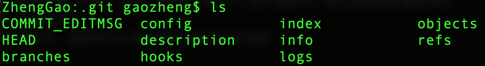
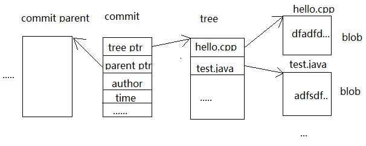
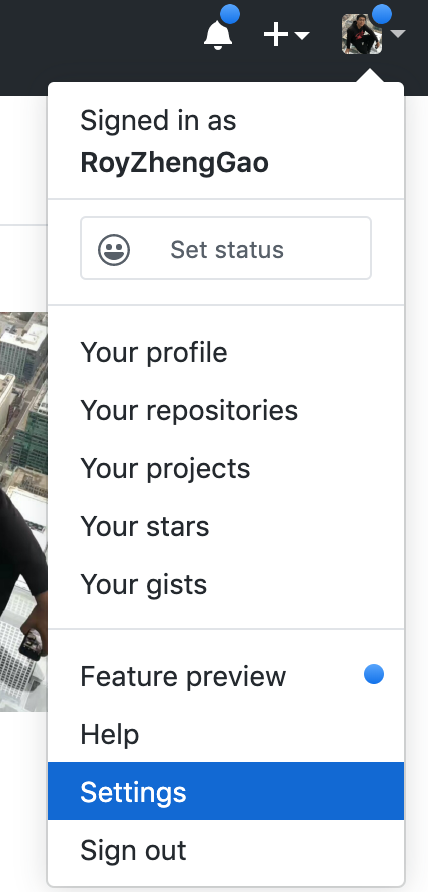
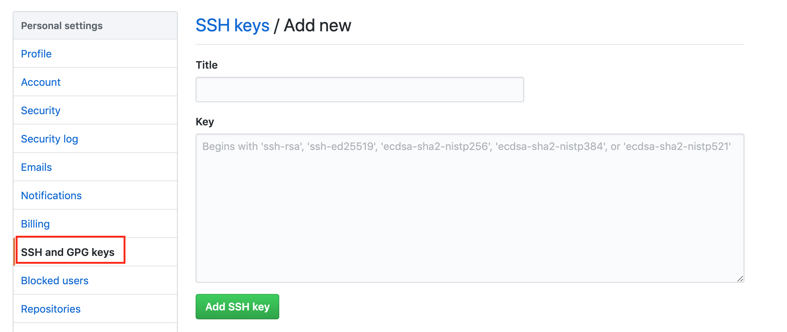
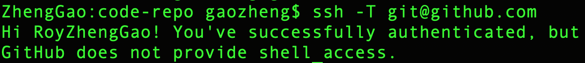
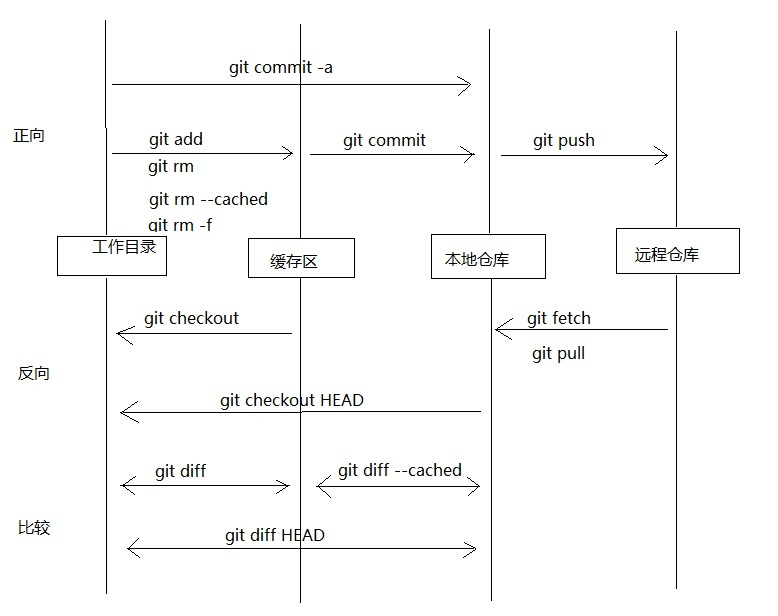
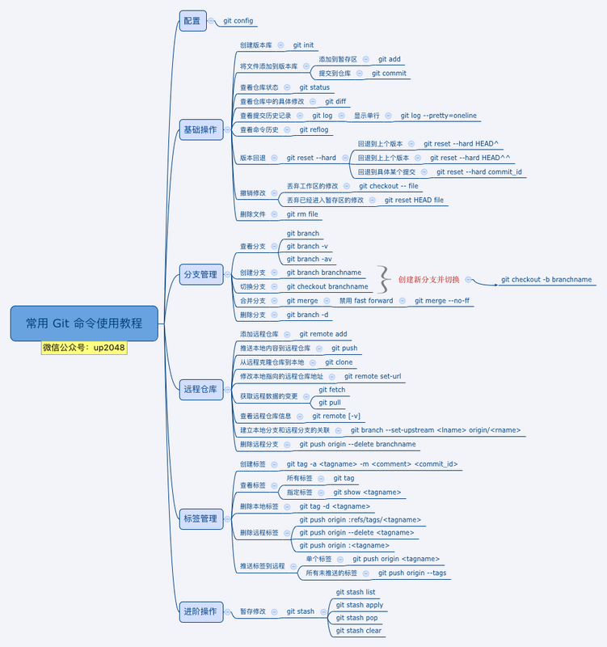
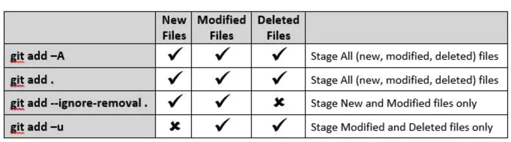

Git 是一种版本控制系统，能够统一管理代码，并且track修改记录。同时，它可以支持多个开发者协同工作在同一个project上面，每个人可以克隆一个备份到自己本地并且work on在自己的部分，最后merge 所有的代码，从而实现版本的分布式集中管理。每个本地copy 都会带有所有的历史记录，可以快速回滚到之前的版本。Github 是一个面向开源及私有软件项目的托管平台，因为只支持 Git 作为唯一的版本库格式进行托管，故名Github。本文我们主要通过探索Git的使用方法，提供一些对于Git 和Github 的insight。
Git基本原理
执行git init命令，就会创建并初始化git仓库，这个时候在该目录下会产生一个.git的隐藏文件夹，而该目录就是你的工作目录，你的一切行为都是在这个目录里，而这个.git文件夹就是你的本地仓库，当你进行了一些文件操作之后，认为可以提交了那么首先你就是提交到本地仓库也就是这个.git中，然后再推送到中心服务器。或者直接克隆一个仓库到本地作为git仓库，也是一样的。当你进入到这个.git目录中，会发现里面还有很多的子目录和文件，有的是很重要的，这里说几个：
- config文件，这是你项目的配置文件，里面有中心服务器的信息和分支信息
- HEAD文件，指向当前的分支
- index文件，是暂存区的相关信息
- logs目录，中都是相关操作产生的日志，这个很重要，因为日志是我们操作的唯一证据，我们本地的版本控制也靠它
- objects目录，里面存储的就是所有 的数据，也就是快照
- refs目录，里是存储指向数据提交对象的指针。

Git的分层结构
Git 有三种状态，你的文件可能处于其中之一：已提交（committed）、已修改（modified）和已暂存（staged）。 已提交表示数据已经安全的保存在本地数据库中。已修改表示修改了文件，但还没保存到数据库中。 已暂存表示对一个已修改文件的当前版本做了标记，使之包含在下次提交的快照中。由此引入 Git 本地项目的三个工作区域的概念：Git 仓库 （repository）、工作目录 (working directory)以及暂存区域 (stage/index)。与之对应的，远程仓库在远端服务器保管同步的工作代码。
- 工作目录就是我们执行命令git init时所在的地方，也就是我们执行一切文件操作的地方。
- 暂存区和本地仓库都是在.git目录，因为它们只是用来存数据的。
- 远程仓库在中心服务器，也就是我们做好工作之后推送到远程仓库，或者从远程仓库更新下来最新代码到我们的git仓库。
- 在工作目录中修改文件。
- 暂存文件，将文件的快照放入暂存区域。
- 提交更新，找到暂存区域的文件，将快照永久性存储到 Git 仓库目录。
- 再将本地仓库的最新版本文件快照推送到远程仓库。
Git 的对象
从根本上讲，git是一套内容寻址的文件系统，它存储的也是key-value键值对，然后根据key值来查找value的，Git也是根据指针来寻址的，这些指针就存储在Git的对象中。Git一共有3种对象：commit对象，tree对象和blob对象。下面便是这3个对象：

这个blob对象对应的就是文件快照中那些发生变化的文件内容，而tree对象则记录了文件快照中各个目录和文件的结构关系，它指向了被跟踪的快照，commit对象则记录了每次提交到本地仓库的文件快照，从上图看出其中有两个指针，一个指向tree对象，一个则指向上一个commit对象。这个怎么理解呢，怎么还有上一个commit对象，在开发过程中，我们会提交很多次文件快照，那么第一次提交的内容会用一个commit来记录，这个commit没有指针指向上一个commit对象，因为没有上一个commit，它是第一个，当第二次提交时，又会有另外一个commit对象来记录，那么这次commit对象中就会有一个指针指向上一次提交后的commit对象，经过很多次提交后就会有很多的commit对象，它们组成了一个链表，当我们要恢复哪个版本的时候，只要找到这个commit对象就能恢复那个版本的文件。而我们所谓的HEAD对象其实就指向最近一个提交的commit对象，也就是最后一个commit对象。
Git, Github 和Gitlab 的区别
- Git 是一种版本控制系统，是一个命令，是一种工具。Github，Gitlab等产品都是第三方基于git这项技术开发的
- Github 是一个基于git实现的在线代码仓库，包含一个网站界面，向互联网开放
- Gitlab 是一个基于git实现的在线代码仓库软件，你可以用Gitlab 自己搭建一个类似于Github 一样的系统，一般用于在企业、学校等内部网络搭建git私服。
总结一下Github和Gitlab的区别：Github和Gitlab都为开发团队提供了存储、分享、发布和合作开发项目的中心化云存储的场所。GitHub和Gitlab都是基于Web的版本控制界面，服务于互联网，Github可以直接注册使用，Gitlab需要部署到服务器。Gitlab创建的项目的默认属性是Private（私人的），可以选择Public（公开的）或Internal（内部的）。Github主要是代码管理，Gitlab主要是仓库管理.可以这样理解：Github就是一个团体，这个团体里的所有人都是可见的。Gitlab是有无数个团体组成，每个团体之间是不可见的，团体内部才是可见的。所以，每个公司都是可以自由搭建Gitlab私有托管服务，搭建完成后为公司内部人员开通权限，这样公司的代码就不会公开出去；如果公司觉得自己搭建管理Git麻烦，可以购买GitHub的私有托管服务，这样也能实现代码公司内部对代码的可见和操作。当企业使用Gitlab的版本控制时，托管服务器是企业自己的。使用Github的私有托管服务时，托管服务器是GitHub的。当使用企业自己服务器时，服务器费用、电费、人工维护费、硬盘网络等等费用就需要企业自理。若使用GitHub的私有服务器时，就方便许多。
Git 的安装与配置
安装Git
可以选择到官网下载对应的安装软件进行安装。也可以在命令行执行安装。
(1) 对于Linux系统，执行：
1 | sudo apt-get install git |
(2) 对于Mac系统，首先安装Homebrew：
1 | ruby -e "$(curl -fsSL https://raw.githubusercontent.com/Homebrew/install/master/install)" |
之后执行：
1 | brew install git |
绑定Github
(1) 注册Github 账号
(2) 环境配置
当安装完 Git 应该做的第一件事就是设置你的用户名称与邮件地址。 这样做很重要，因为每一个 Git 的提交都会使用这些信息，并且它会写入到你的每一次提交中，不可更改：
1 | # 配置用户名 |
再次强调，如果使用了 --global 选项，那么该命令只需要运行一次，因为之后无论你在该系统上做任何事情， Git 都会使用那些信息。 当你想针对特定项目使用不同的用户名称与邮件地址时，可以在那个项目目录下运行没有 --global 选项的命令来配置。可用 git config --global --list 命令查看配置是否OK。
(3) 生成SSH Key
在terminal 输入ssh-keygen -t rsa命令，表示我们指定 RSA 算法生成密钥，然后敲三次回车键，期间不需要输入密码，之后就就会生成两个文件，分别为id_rsa和id_rsa.pub，即密钥id_rsa和公钥id_rsa.pub。对于这两个文件，其都为隐藏文件，默认生成在~/.ssh目录。
(4) 添加SSH Key
登入Github.com 中的个人账号。点击右上角头像，选择Settings。

点击SSH and GPG keys -> New SSH key，把公钥id_rsa.pub 的内容粘贴到Key处的位置（Titles的内容不填写也没事），然后点击Add SSH key 即可。

(5) 验证绑定
在我们添加完SSH key之后，可以通过在 Git Bash 中输入ssh -T git@github.com进行测试，出现下图所示，表示绑定成功：

电脑绑定多个Github账号
有些时候，我们可能有多个Github的账号，为了在同一台电脑上能向不同Github的账号push 代码，我们需要做以下设定：
(1) 新生成一对密钥。打开terminal 输入
1 | ssh-keygen -t rsa -b 4096 -C "your_email@example.com" |
提示Enter file in which to save the key (/Users/nchkdxlq/.ssh/id_rsa):，如果直接按回车，会生成以id_rsa开头命名的密钥对，会覆盖原来在.ssh目录下面已有的id_rsa密钥。所以需要输入生成密钥的名称zheng_rsa，按回车之后就会在.ssh目录下生成zheng_rsa私钥和zheng_rsa.pub公钥。
(2) 把zheng_rsa.pub公钥添加到github账号中，如果没有提示密钥已使用，说明密钥添加成功了。
(3) 此时如果执行git push的话，会出现以下错误：
1 | ERROR: Permission to zheng/test.git denied to nchkdxlq. |
原因是因为每次push的时候，本地的私钥都会和服务端（Github）的公钥去匹配，如果匹配成功就可以push了；而在默认情况下，本地的私钥都会读取id_rsa文件，而账号中对应的公钥zheng_rsa.pub，所以当然会报没有权限的错误。为此需要做以下两个设置：
- 新建config文件。
在~/.ssh目录下新建config文件并添加如下内容，该文件用于设置私钥对应的服务器:第一个对应的account 是原有的account,私钥在1
2
3
4
5
6
7
8
9
10
11#Default Account
Host github.com
HostName github.com
User git
IdentityFile ~/.ssh/id_rsa
#zheng zheng_github.com为服务器的别名
Host zheng_github.com
HostName github.com
User git
IdentityFile ~/.ssh/zheng_rsaid_rsa中。第二个是新加的account，私钥在zheng_rsa中。 - 修改具体项目的config文件。
在具体项目的.git/config文件中，有一行设置url的配置。
默认配置：修改后配置：1
url = git@github.com:zhenggao/test.git
可以看出 Host发生改动。修改url配置还有更简单的方式，在对应的项目中执行命令：1
url = zheng_github.com:zhenggao/test.git
之后可以通过以下代码验证是否绑定成功：1
git remote set-url origin zheng_github.com:zhenggao/test.git
1
ssh -T zheng_github.com
基本操作
下图是一些在四个工作区域中的基本的操作。一套最常用的command 组合如下面代码所示：

1 | git init # 初始化 |
接下来我们具体讲每个功能对应的一些Git command。
创建仓库
创建新文件夹，打开，然后执行下面代码以创建新的 Git 仓库。
1 | git init |
检出仓库
执行如下命令以创建一个本地仓库的克隆版本：
1 | git clone /path/to/repository |
如果是远端服务器上的仓库，你的命令会是这个样子：
1 | git clone username@host:/path/to/repository |
添加与提交
你可以计划改动（把它们添加到缓存区），使用如下命令：
1 | git add <filename> |
这是 git 基本工作流程的第一步；使用如下命令以实际提交改动：
1 | git commit -m "代码提交信息" |
现在，你的改动已经提交到了 HEAD(指向最后一次提交结果的指针)，但是还没到你的远端仓库。
推送改动
你的改动现在已经在本地仓库的 HEAD 中了。执行如下命令以将这些改动提交到远端仓库：
1 | git push -u origin master // 第一次推送时使用，可以简化后面的推送或者拉取命令使用 |
其中master 是对应的repository的主brunch的名字，可以替换成其他brunch。注意： git push -u origin master，第一次使用时，带上 -u参数，在将本地的 master 分支推送到远程新的 master 分支的同时，还会把本地的 master 分支和远程的 master 分支关联起来。
如果你还没有克隆现有仓库，并欲将你的仓库连接到某个远程服务器，你可以使用如下命令添加：
1 | git remote add origin your_remote_git_repo |
替换本地改动
假如你做错事（自然，这是不可能的），你可以使用如下命令替换掉本地改动：
1 | git checkout -- <filename> |
此命令会使用 HEAD 中的最新内容替换掉你的工作目录中的文件。已添加到缓存区的改动，以及新文件，都不受影响。
假如你想要丢弃你所有的本地改动与提交，可以到服务器上获取最新的版本并将你本地主分支指向到它：
1 | git fetch origin |
README 和 .gitignore
-
README 文件是开发的时候非常重要的一个文档说明，是以Markdown 格式书写。提交到Github中默认会放到首页展示。
-
.gitignore 文件用来过滤不必要提交的文件，但是ignore的规则对那些已经被track的文件无效。因此推荐初始化git项目时就创建.gitignore文件。
对于已经track且有改动的文件添加ignore规则, 如下:git rm -r --cached要忽略的文件 (如:git rm -r --cahced build/*, 如修改列表中的内容全部是不需要的, 那么你可以使用最最简单的命令搞定git rm -r --cached .)git add .git commit -m " commet for commit ....."git push
通配符匹配被忽略文件或者目录时，一个星表示任意字符；两个星表示任意路径。以/开头忽略目录，表示当前。例如/mytmp表示忽略根目录下的mytmp。以**/开头，忽略所有目录。例如**/mytmp表示忽略所有层级下的mytmp目录。用!开头表示例外。例如!/child1/child2/mytmp表示单独强调“不忽略”/child1/child2/mytmp的 mytmp 目录。
分支操作
分支是用来将特性开发绝缘开来的。在你创建仓库的时候，master 是“默认的”。在其他分支上进行开发，完成后再将它们合并到主分支上。
查看分支使用 git branch：
1 | git branch // 查看本地分支信息 |
注意：在 git branch 的输出内容中，有一个分支，前面带有 * 号，这标识我们当前所在的分支。
创建分支：
1 | git branch dev // 新建一个名称为 dev 的分支 |
创建一个叫做“feature_x”的分支，并切换过去：
1 | git checkout -b feature_x |
切换回主分支：
1 | git checkout master |
再把新建的分支删掉：
1 | git branch -d feature_x |
除非你将分支推送到远端仓库，不然该分支就是 不为他人所见的：
1 | git push origin <branch> |
更新与合并
要更新你的本地仓库至最新改动，执行：
1 | git pull |
以在你的工作目录中 获取（fetch） 并 合并（merge） 远端的改动。
要合并其他分支（branch）到你的当前分支（例如 master），执行：
1 | git merge <branch> |
两种情况下，git 都会尝试去自动合并改动。不幸的是，自动合并并非次次都能成功，并可能导致 冲突（conflicts）。 这时候就需要你修改这些文件来人肉合并这些 冲突（conflicts） 了。改完之后，你需要执行如下命令以将它们标记为合并成功：
1 | git add <filename> |
在合并改动之前，也可以使用如下命令查看两个branch的区别：
1 | git diff <source_branch> <target_branch> |
标签操作
创建标签
在软件发布时创建标签，是被推荐的。这是个旧有概念，在 SVN 中也有。可以执行如下命令以创建一个叫做 1.0.0 的标签：
1 | git tag 1.0.0 1b2e1d63ff |
1b2e1d63ff 是你想要标记的提交 ID 的前 10 位字符。你也可以用该提交 ID 的少一些的前几位，只要它是唯一的。使用如下命令获取提交 ID：
1 | git log |
或者另外一种方式创建标签：
1 | git tag -a 'tagname' -m 'comment' 'commit_id' |
-a 参数指定标签名， -m 添加备注信息， ‘commit_id’ 指定打标签的提交。
查看所有标签
1 | git tag // 查看本地仓库中的所有标签 |
删除本地标签
1 | git tag -d tagname |
Git 命令详解
一些基本命令如图所示：

- 查看仓库的状态
不论我们是新建了文件，将文件加入暂存区，或者其他的修改等等，我们都可以通过：来随时查看仓库中文件的状态。这个应该是使用 Git 做版本控制过程中，使用最多的一个命令。1
git status
- 查看仓库中的具体修改
很经常的，我们对某个文件做了修改，但过不久就忘记了。这时候就可以通过git diff来查看具体的修改内容。1
2git diff // 查看版本库中所有的改动
git diff Readme.md // 查看具体文件的改动 - 查看提交历史记录
有的时候，你会需要查看自己做过哪些提交，来回顾自己完成的部分。或者需要寻找某个具体的提交来查看当时的代码。这里需要用到：在 git log 的输出内容中，可以看到每次提交的 ID，是一个 40 位的字符串。1
2git log // 显示所有提交的历史记录
git log --pretty=oneline // 单行显示提交历史记录的内容 - 版本回退
有了 git log 来查看提交的历史记录，我们就可以通过git reset --hard来回退到我们需要的特定版本，然后使用当时的代码进行各种操作。1
2
3git reset --hard HEAD^ // 回退到上一个提交版本
git reset --hard HEAD^^ // 回退到上上一个提交版本
git reset --hard 'commit_id' // 会退到 commit_id 指定的提交版本 git reset --hard和git reset --soft的区别：soft仅撤销commit,写的代码依然保留。 hard连本地改动的源码也会撤销。git clean:可以清除repository 下面没有track的文件。经常和git reset --hard一起结合使用. 记住reset只影响被track过的文件, 所以需要clean来删除没有track过的文件. 结合使用这两个命令能让你的工作目录完全回到一个指定的的状态。常用命令 git clean -dfx- 回到未来的某个提交
当退回到某个提交的版本以后，再通过git log是无法显示在这之后的提交信息的。但是，通过git reflog可以获取到操作命令的历史。1
2git reflog
git reset --hard 'commit_id' - 撤销修改
撤销修改同样包括两方面的内容，由于仓库中的文件在提交之前，可能在工作区中，尚未在版本控制范围内，也可能在暂存区中。- 丢弃工作区中文件的修改
注意：1
2git checkout -- Readme.md // 如果 Readme.md 文件在工作区，则丢弃其修改
git checkout -- . // 丢弃当前目录下所有工作区中文件的修改git checkout --中的--是必须的。
2. 丢弃已经进入暂存区的修改1
git reset HEAD Readme.md // 将 Readme.md 恢复到 HEAD 提交版本的状态
- 提交完之后发现有漏掉的文件没有添加，或者提交信息写错了，可以用
--amend来重新提交：
1
git commit --amend
- 取消之前
git add .的操作
可以看下git status, 然后1
rm -f ./.git/index.lock
- 删除文件
在文件未添加到暂存区之前，对想删除文件可以直接物理删除。或者通过git checkout -- file来丢弃。如果文件已经被提交，则需要git rm来删除：注意：1
2git rm Readme.md // 删除已经被提交过的 Readme.md
rm -rf .gitgit rm只能删除已经提交到版本库中的文件。其他状态的文件直接用这个命令操作是出错的。
同时，Linux的命令：可以直接unlink 整个project 和repository。1
rm -rf .git
- 删除branch:
如果你还在一个分支上，那么 Git 是不允许你删除这个分支的。所以，请记得退出分支.- 当一个分支被推送并合并到远程分支后，
git branch -d <branch>才会本地删除该分支 - 如果一个分支还没有被推送或者合并，那么可以使用
git branch -D <branch>强制删除它。 - 使用这个命令可以远程删除分支：
git push <remote> --delete <branch>
- 当一个分支被推送并合并到远程分支后，
- 删除某一commit:
- 首先找到commit_B提交之前的一次提交的commit_A
- 执行如下命令:
git rebase -i commit_A - 将commit_B这一行前面的pick改为drop，然后按照提示保存退出
- 至此已经删除了指定的commit，可以使用
git log查看下
git fetch和git pull的区别
想要向远程仓库推送前，需要先获取到远程仓库的最新内容。可以通过git fetch和git pull来获取远程仓库的内容。1
2git fetch origin master
git pull origin mastergit fetch是仅仅获取远程仓库的更新内容，并不会自动做合并。git pull在获取远程仓库的内容后，会自动做合并，可以看成git fetch之后git merge。- 建议多使用
git fetch。
git rebase变基和git merge的区别
git rebase和git merge都是用来合并，各有优缺点，所以有些团队会约定合并时只能用git merge或只能用git rebase，如果约定只能用git rebase来合并，这种工作方式就被称为 ‘git rebase工作流’。在用git rebase合并分支时，合并后的日志并非按各分支的提交时间排列，而是把一个分支的日志全部排列在另一个分支的日志之上，即使它们是并行开发的，在开发过程中交错提交，但看起来也好像是按先后顺序开发的一样。git add .和git add -u和git add -A区别git pull --rebase：去除多余的merge commit记录。使得整体log commit记录变得更加顺畅。git pull=git fetch+git merge
git pull --rebase=git fetch+git rebase。git blame [filename]：溯一个指定文件的历史修改记录。[filename]就是我们想要了解的某一个具体文件的完整修改记录。- 如果需要two factor authorization，需要personal access token的话，需要做以下两步：
git config --global credential.helper cache避免一直输入user name和password (personal access token), 用git config --global --unset credential.help可以取消。git remote set-url origin https://<token>@github.com/RoyZhengGao/RoyZhengGao.github.io.git把personal access token加上去
Reference: